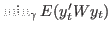
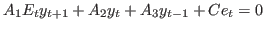
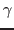
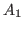
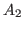
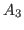
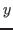
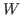

Description
This command computes optimal simple policy rules for linear-quadratic problems of the form:

such that:

where:
-
 denotes the unconditional expectations operator;
denotes the unconditional expectations operator;
-  are parameters to be optimized. They must be elements
of the matrices , , , i.e. be specified as
parameters in the
params-command and be entered in themodel-block; -  are the endogenous variables, specified in the
var-command, whose (co)-variance enters the loss function; -
 are the exogenous stochastic shocks, specified in the
are the exogenous stochastic shocks, specified in the
varexo-command; -  is the weighting matrix;
The linear quadratic problem consists of choosing a subset of model
parameters to minimize the weighted (co)-variance of a specified subset
of endogenous variables, subject to a linear law of motion implied by the
first order conditions of the model. A few things are worth mentioning.
First, denotes the selected endogenous variables’ deviations
from their steady state, i.e. in case they are not already mean 0 the
variables entering the loss function are automatically demeaned so that
the centered second moments are minimized. Second, osr only solves
linear quadratic problems of the type resulting from combining the
specified quadratic loss function with a first order approximation to the
model’s equilibrium conditions. The reason is that the first order
state-space representation is used to compute the unconditional
(co)-variances. Hence, osr will automatically select
order=1. Third, because the objective involves minimizing a
weighted sum of unconditional second moments, those second moments must
be finite. In particular, unit roots in are not allowed.
The subset of the model parameters over which the optimal simple rule is
to be optimized, , must be listed with osr_params.
The weighting matrix used for the quadratic objective function
is specified in the optim_weights-block. By attaching weights to
endogenous variables, the subset of endogenous variables entering the
objective function, , is implicitly specified.
The linear quadratic problem is solved using the numerical optimizer specified with opt_algo.
Options
The osr command will subsequently run stoch_simul and
accepts the same options, including restricting the endogenous variables
by listing them after the command, as stoch_simul
(see Computing the stochastic solution) plus
opt_algo = INTEGERSpecifies the optimizer for minimizing the objective function. The same solvers as for
mode_compute(see mode_compute) are available, except for 5,6, and 10.optim = (NAME, VALUE, ...)A list of NAME and VALUE pairs. Can be used to set options for the optimization routines. The set of available options depends on the selected optimization routine (i.e. on the value of option opt_algo). See optim.
maxit = INTEGERDetermines the maximum number of iterations used in
opt_algo=4. This option is now deprecated and will be removed in a future release of Dynare. Useoptiminstead to set optimizer-specific values. Default:1000tolf = DOUBLEConvergence criterion for termination based on the function value used in
opt_algo=4. Iteration will cease when it proves impossible to improve the function value by more than tolf. This option is now deprecated and will be removed in a future release of Dynare. Useoptiminstead to set optimizer-specific values. Default:e-7silent_optimizersee silent_optimizer
huge_number = DOUBLEValue for replacing the infinite bounds on parameters by finite numbers. Used by some optimizers for numerical reasons (see huge_number). Users need to make sure that the optimal parameters are not larger than this value. Default:
1e7
The value of the objective is stored in the variable
oo_.osr.objective_function and the value of parameters at the
optimum is stored in oo_.osr.optim_params. See below for more
details.
After running osr the parameters entering the simple rule will be
set to their optimal value so that subsequent runs of stoch_simul
will be conducted at these values.